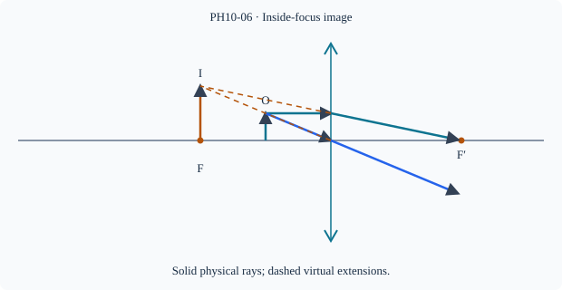

Prerequisite bridge
PH10-05
Before starting, identify the reference frame, directed rays, units and applicable geometric assumptions. Unbound prerequisites remain provisional.
Connected textbook foundation (preserved from PR #5)
6. Image zones for a converging lens
For a real object farther than twice the focal length, a converging thin lens forms a smaller inverted real image between f and 2f on the opposite side. At 2f, the real inverted image is of equal size. Between f and 2f, the real inverted image lies beyond 2f and is magnified. As the object approaches the focal plane from beyond, the real image distance becomes very large.
When the object lies inside the focal length, outgoing rays diverge and their backward extensions can locate an enlarged upright virtual image on the same side as the object. There is no corresponding real image on a screen behind the lens.
The table of image cases is therefore a consequence of ray geometry and the conjugate relation, not the source of understanding. A D3 explanation should reconstruct it from rays and object distance.
Build and check the model
For a converging thin lens with F>0, real object distance d>0 and signed u=−d, v=Fd/(d−F). If d>F then v>0 and m=−v/d<0; if d<F then v<0 and m>0. At d=F rays emerge parallel, no finite image. At d=2F real image is equal size. For diverging lens f<0 and real object, v<0 and 0<m<1.
Worked anchor
F=8 cm, d=12 gives v=24 cm, m=−2; d=4 gives v=−8 cm, m=+2; d=16 gives v=16 cm, m=−1.
Condition and limiting check
Real images can be caught at the convergence plane if light reaches it. A virtual image can be viewed through an additional imaging element but not caught by an ordinary screen placed at its apparent location.
Misconception repair
Crossing 2F changes size regime; crossing F changes real/virtual regime.
Reasoning diagram

Self-check before transfer
F=12 cm, d=8 cm. Find v and orientation.
Check the reasoning
v=−24 cm, m=+3; virtual upright enlarged.
Source and figure status
Curriculum pointer CBSE10; candidate scope only. Preserved chapter manuscript. Original subtopic-specific figure attached. Scientific figure and teaching-sufficiency reviews remain HOLD.